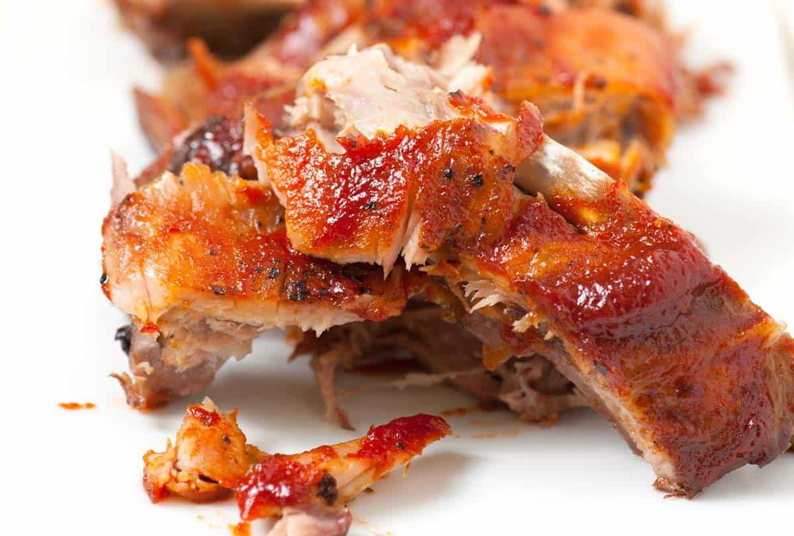

Oven-Baked Ribs

Easy Oven Baked Ribs
These oven baked ribs are slowly cooked to allow for the meat to
be soft and tender enough to easily fall off the bone. This recipe
is easy to follow and ingredients easy to acquire. Sourced from
inspiredtaste.net
Ingredients
- 2 lbs baby back ribs
- Enough of the following to rub on the surface of the ribs:
- Salt and pepper
- Kinder's Rub: The BBQ Blend or Brown Sugar Blend
- Your favorite BBQ sauce
Steps
- Preheat oven to 275F (135C)
- Remove membrane on the back of ribs using a knife to separate from bone and pulling
- Season both sides of ribs and rub the seasoning into the meat
- Line baking sheet with aluminum and place ribs meat side up. Fully cover ribs with more aluminum foil
- Bake for 2 1/2 to 3 1/2 hours, until meat is tender
- Pull ribs out of oven and cover with BBQ sauce (use basting brush to evenly distribute sauce)
- Optional: Grill ribs until sauce is caramelized